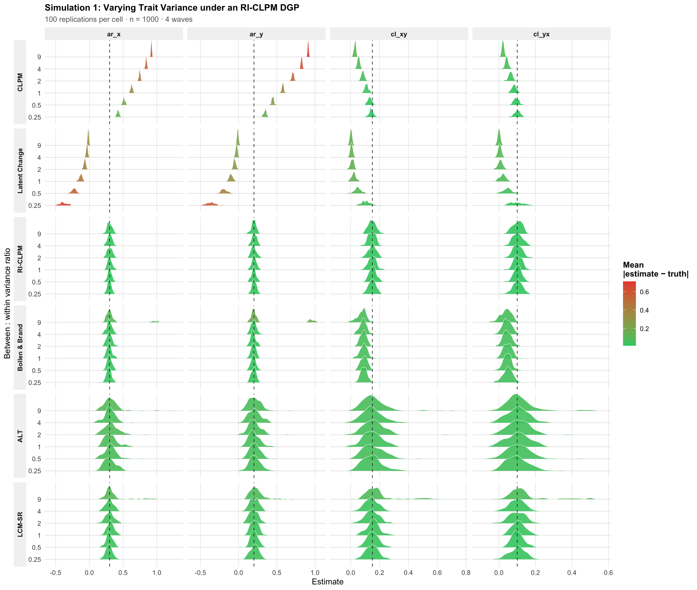
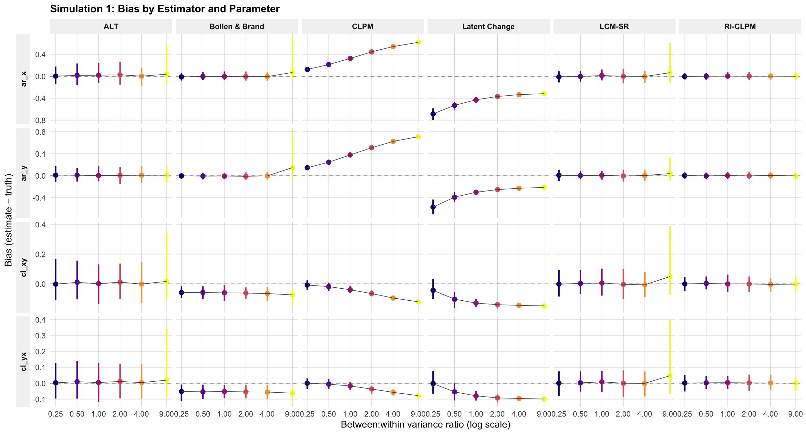
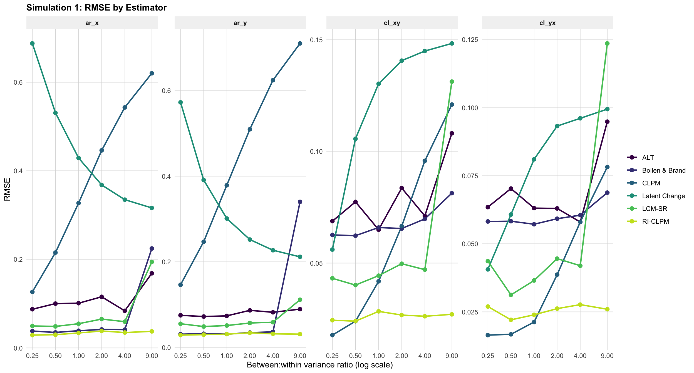

6 Simulations
The previous chapters established that the CLPM, RI-CLPM, LCSM, ALT, LCM-SR, and Bollen & Brand all share the same four AR/CL labels but differ in how they decompose observed variance. The substantive question is empirical: when each model is fit to data that was not generated under its own assumptions, what does it recover?
This chapter answers that question with a focused simulation experiment.
Simulation — Heterogeneity. Data are generated from an RI-CLPM and the between-to-within variance ratio is varied from 0.25 (mostly within-person noise) to 9 (mostly stable trait). All six estimators are fit to each replication.
All AR/CL parameters in the DGP are held at the same target values, so the only thing changing across conditions is the amount of between-person heterogeneity.
| Parameter | Label | True Value |
|---|---|---|
| AR(X) | ar_x |
0.30 |
| AR(Y) | ar_y |
0.20 |
| CL(X \(\to\) Y) | cl_xy |
0.15 |
| CL(Y \(\to\) X) | cl_yx |
0.10 |
6.1 Population Models
Each DGP is a population lavaan parameter table built by piping the estimator’s syntax through lavaanify(), then overwriting the variance components.
6.2 Estimators and Fit Helper
6.3 Simulation 1: Varying Between-Person Heterogeneity
Data are generated from the RI-CLPM at each bw_ratio \(\in \{0.25, 0.5, 1, 2, 4, 9\}\). Each cell is replicated 100 times. All six estimators are fit to each replication.
6.3.1 Distributions of Estimates
Figure 6.1 shows the sampling distribution of each estimator’s recovery of the four AR/CL parameters. Vertical lines mark the true value; each ridge is colored by its mean absolute deviation from truth — the more green the closer to the truth, red ridges drift far from the true value. One important caveat: The LCGM autoregressive parameters drift far from true parameter values, but the AR parameter should be interpreted as \(1+\beta\) where \(\beta\) is the true slope generated from the RI-CLPM.
6.3.2 Bias and Precision
Figure 6.2 collapses the distributions into mean bias with 95% MC intervals. It’s also pretty revealing. The CLPM breaks down with a moderate amount of trait variance. Also the spikes that appear for some are because only a handful of models actually converge, so these are means of only a handful of actual estimates.

The RMSEA estimates vary wildly across models Figure 6.3, and the CLPM generally fits poorly. Though most models collapse when there is effectively only trait variance.

6.3.3 Convergence
Table 6.2 displays the convergence statistics. This is an important indicator of each models ability to operate in extreme conditions, but conditions that are quite common in panel data in the social sciences. The convergence rate is simply the proportion of replications that produce parameter estimates. The Heywood rate is the proportion of converged replications that produce at least one negative variance estimate. These errors are quite common in over parameterized models. The ALT and LCM-SR have very high rates of Heywood cases, especially as the trait variance grows.
| Simulation 1: Convergence and Heywood Rates | ||||||||||||
| 100 replications · n = 1000 | ||||||||||||
| bw_ratio | CLPM_conv_rate | Latent Change_conv_rate | RI-CLPM_conv_rate | Bollen & Brand_conv_rate | ALT_conv_rate | LCM-SR_conv_rate | CLPM_heywood_rate | Latent Change_heywood_rate | RI-CLPM_heywood_rate | Bollen & Brand_heywood_rate | ALT_heywood_rate | LCM-SR_heywood_rate |
|---|---|---|---|---|---|---|---|---|---|---|---|---|
| 0.25 | 1 | 1 | 1 | 1 | 1 | 1 | 0 | 0 | 0 | 0.00 | 0.77 | 0.75 |
| 0.50 | 1 | 1 | 1 | 1 | 1 | 1 | 0 | 0 | 0 | 0.00 | 0.78 | 0.69 |
| 1.00 | 1 | 1 | 1 | 1 | 1 | 1 | 0 | 0 | 0 | 0.00 | 0.69 | 0.86 |
| 2.00 | 1 | 1 | 1 | 1 | 1 | 1 | 0 | 0 | 0 | 0.00 | 0.78 | 0.71 |
| 4.00 | 1 | 1 | 1 | 1 | 1 | 1 | 0 | 0 | 0 | 0.00 | 0.73 | 0.68 |
| 9.00 | 1 | 1 | 1 | 1 | 1 | 1 | 0 | 0 | 0 | 0.27 | 0.77 | 0.80 |
6.4 Bayesian RI-CLPM with Informative Priors
One of the issues with the RI-CLPM is that it can be difficult to fit when there is a lot of trait variance. The Bayesian approach allows us to put informative priors on the parameters.
id lhs op rhs user block group free ustart exo label plabel
1 1 I_x =~ x1 1 1 1 0 1 0 .p1.
2 2 I_x =~ x2 1 1 1 0 1 0 .p2.
3 3 I_x =~ x3 1 1 1 0 1 0 .p3.
4 4 I_x =~ x4 1 1 1 0 1 0 .p4.
5 5 I_y =~ y1 1 1 1 0 1 0 .p5.
6 6 I_y =~ y2 1 1 1 0 1 0 .p6.| RI-CLPM at 9:1 Between:Within Ratio | |
| 50 replications, n = 1000 | |
| Metric | Value |
|---|---|
| Replications | 50.00 |
| ML converged | 1.00 |
| ML Heywood (of conv.) | 0.00 |
| ML mean # warnings | 0.00 |
| Bayes finished | 0.98 |
| Bayes Heywood (of finished) | 0.00 |